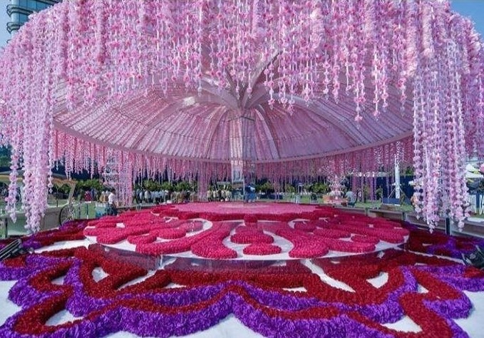
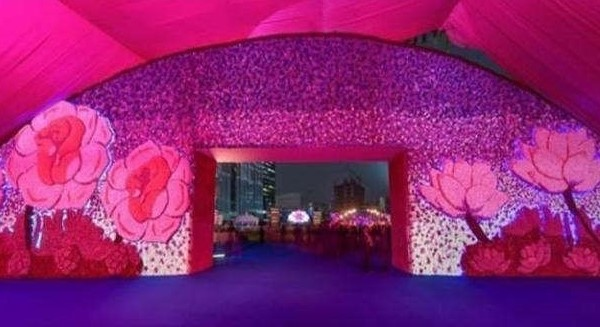
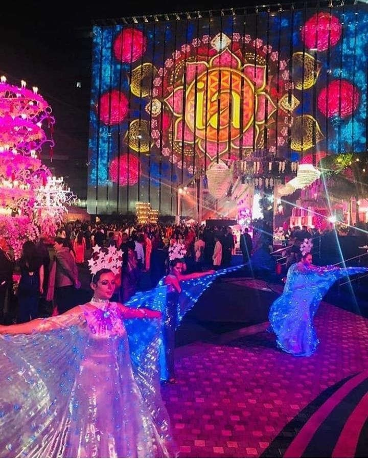
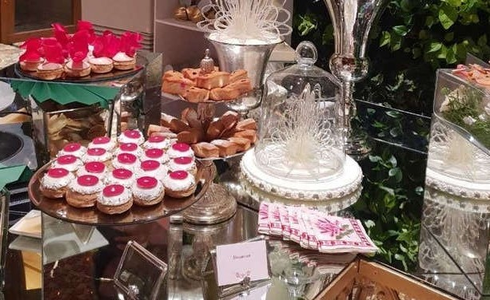
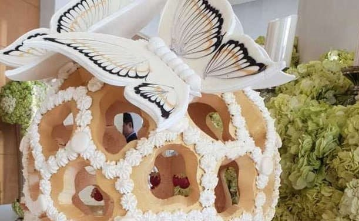
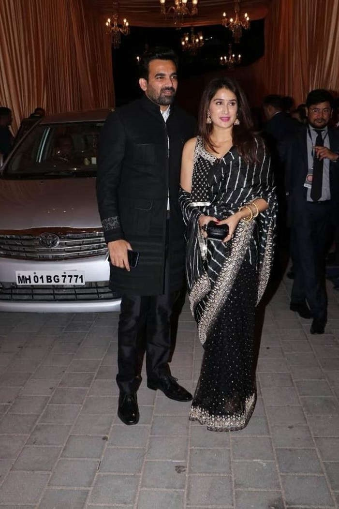
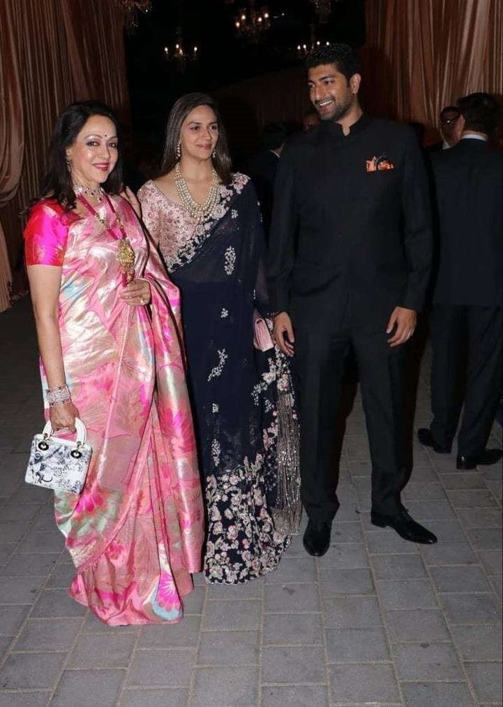
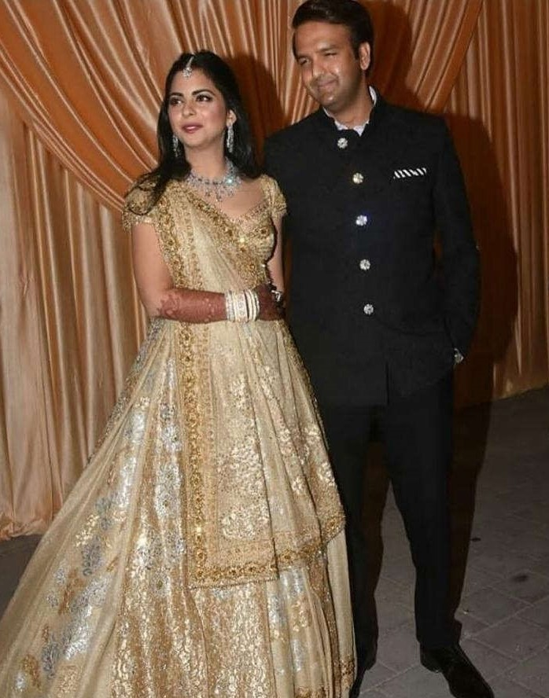

The wedding celebration was followed by a grand reception on December 14. The majestic celebrations took place at Jio Gardens in Bandra Kurla Complex, Mumbai. Jio Gardens was transformed into an enchanted garden full of flowers for celebrating Isha and Anand's exquisite reception. Designer Preston Bailey took the work of changing the look of JIO Gardens to an exquisite one.



The wedding reception of the newly-weds also took place in Mumbai and Foodlink were reportedly managing the F&B for the event.
At the reception, guests were served exquisite dishes from cuisines from across the country. The menu additionally enclosed Mediterranean and pan-Asian dishes, as well as food from Thai and Japanese cuisines. Among highlights from the Asian menu were the dimsums from Hong Kong. For desserts, French luxury brand Laduree served delicious macarons to the guests. A great variety of desserts, together with a counter-full of truffles, was additionally part of the marriage reception menu.



The reception also had a music concert organised for Isha and Anand. Singer Javed Ali and Rekha Bhardwaj gave a mesmerising performance. Most of the limelight, however was stolen by music maestro AR Rahman as he sang his beautiful renditions. Sukhwinder Singh and Udit Narayan and Neeti Mohan were among the other talented singers who performed at the function.

The famous singer Falguni Pathak also attended Isha Ambani-Anand Piramal wedding reception. Celebrity couple Zaheer Khan and Sagarika Ghatge were also captured at the reception. Hema Malini blessed the occasion with her daughter Esha Deol. Legendary actor Jeetendra arrived with daughter Ekta Kapoor and son Tusshar Kapoor.



For her grand reception, Isha wore a customised gold lehenga designed by Valentino, a first-ofits-kind creation by the designer. The newlyweds posed in great delight with their family and friends.
It was a high profile wedding ceremony with some the most prominent personalities like Pranab Mukherjee, Hillary Clinton, Ratan Tata, Amitabh and Jaya Bachchan, Rajinikanth with wife Lata.